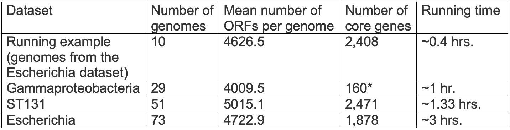

What are the tunable parameters and how can they influence my results?
The core threshold parameter dictates the inclusion or exclusion of genes in the core proteome. By default, this value is set to 100% and thus, only genes shared by all analyzed genomes are included in the core proteome. However, when bacteria from different orders are analyzed
(see example in the
Gallery section),
this strict definition can lead to a very small core proteome (see also
Should I include an outgroup genome in my analysis?).
Alternatively, the core threshold can be lowered. For example, when a 70% threshold is used, genes shared by at least 70% of the analyzed genomes are included in the "core" proteome. In this case, the tree will be inferred using a larger dataset, albeit, with missing values. As always, the best way to study the impact of tunable parameters on a specific dataset is to perform trial runs using different thresholds.
Two additional tunable parameters are the similarity threshold and the maximum permitted E value. The output of the all-against-all procedure is a large table in
m8 file format,
in which each row corresponds to a gene in one genome and its best reciprocal hit in another genome. By default, if a best reciprocal hit is scored with an E value above 0.01 or a similarity score lower than 80%, it is filtered out. Consequently, these values determine the criterion for considering a pair of ORFs as orthologous sequences. In some cases, a user may choose to include more remote homologs, taking into consideration that the rate of false-positive homologs also increases. In this case, a user can increase the E value threshold and decrease the similarity score threshold. In contrast, when an orthologous group includes more than one gene from each genome, it may include paralogous sequences. In this case, the use of more stringent parameters in the homology search is recommended, i.e., reduced E value threshold and increased similarity score threshold.
Should I include an outgroup genome in my analysis?
An outgroup genome allows reconstructing rooted trees. However, including an outgroup may strongly affect the results. For example, core genes are genes shared by all analyzed genomes. A phylogenetically distant outgroup may share only some of the genes shared by all ingroup genomes, thus resulting in sparse data, i.e., a core proteome composed of fewer genes. This, in turn, may produce a less accurate phylogenetic tree. Note that it can also lead to no tree at all, if including the outgroup results in no genes being shared by all genomes
(see
Why a species tree was not included in my analysis results?).
Including a remote outgroup may also introduce a long-branch attraction artifact, as well as biases due to different nucleotide composition in the ingroup vs. outgroup sequences
(see
Can I trust the obtained core gene phylogenetic tree?).
Thus, in cases where an outgroup is available, we recommend running the analysis twice - with and without the outgroup. The user is advised to compare these two runs and study the impact of including the outgroup on the specific data being analyzed.
What is the expected running time for my data?
The running time depends on the number of genomes, the distance between pairs of genomes, the number of ORFs, and the number of core genes. It also depends on the number of jobs currently running on our computer cluster. Thus, we cannot a-priori accurately estimate running times. However, a rough estimate can be obtained with the following table, which details the running times of the various examples provided in
the
Gallery section
and the "running example".

*Minimal percentage for core: 50% (only three genes that are shared by 100% were detected)
Why does the homolog-inference step take so long?
When searching for homologs, all of the genes in each genome are queried against all other genes in all other genomes, making it the most computationally intensive step. Even though M1CR0B1AL1Z3R uses MMSEQS2, the fastest algorithm currently available for this task
(
Steinegger M. & Soding J., Nat Biotechnol, 2017)
and despite the fact that it uses parallelization for this computational step, it might take over 12 hours for a dataset containing ~150 genomes.
How reliable is the ortholog-identification step and is there a way to improve it?
The detection of orthologous genes relies on the correct identification of ORFs. Thus, errors in detecting ORFs can propagate to erroneous detection of orthologs. In addition, the ortholog-identification step relies on homology search algorithms such as BLAST. These algorithms are approximate and may lead to two types of error: the identification of an erroneous ortholog and the misidentification of a correct ortholog. An ortholog can also be missed because some of the analyzed genomes may not be fully assembled. Finally, horizontal gene transfer (HGT) is a major evolutionary force shaping bacterial evolution and thus, seemingly orthologous sequences can, in fact, represent xenology rather than orthology (xenology is when sequence similarity stems from HGT events rather than from vertical divergence following speciation events). It is critically important to be aware of these potential biases when interpreting the results. An excellent reference that discusses these problems and suggests algorithms to test (and sometimes correct) for such biases
is Philippe H., et al. (
PLoS Biology, 2011).
Can I trust the obtained multiple sequence alignments?
Despite substantial advances in multiple alignment theory and the development of even faster and more accurate alignment programs, generated alignments are still fraught with errors
(
Thompson JD., et al., PLoS One, 2011;
Sela I., et al.,Nucleic Acids Res, 2015). In this web server, we use the MAFFT program
(
Katoh K. and Standley DM., Mol Biol Evol, 2013), which combines accuracy and computational speed, and is one of the most widely used alignment methods. However, other excellent alignment programs exist. For example, the PRANK program
(
Loytynoja A. and Goldman N., Science, 2008) is considerably slower than MAFFT, but has been shown to yield more accurate alignments compared to MAFFT in simulation studies
(e.g.,
Sela I., et al.,Nucleic Acids Res, 2015). In our web server, we provide the entire set of inferred multiple sequence alignments, and the user can download these files and realign them using any other alignment method. In addition, we suggest testing the reliability of any specific alignment using existing tools, such as the
GUIDANCE2 web server (
Sela I., et al.,Nucleic Acids Res, 2015).
Can I trust the obtained core gene phylogenetic tree?
Reconstructing accurate phylogenetic trees is one of the "holy grails" of molecular evolution research. It is a notoriously difficult task, known to be affected by many factors, including
(i) the quality of the input sequences; (ii) the sequence sampling; (iii) the quality of the input alignment;
(iv) the identification of orthologous sequences; (v) missing data; (vi) the assumed evolutionary model;
(vii) the level of sequence divergence and saturation; (viii) random stochastic factors.
Often, reconstructed trees are highly supported, yet they reflect non-phylogenetic signal rather than genuine phylogenetic signal
(
Philippe H, et al., PLoS Biology, 2011). For example, long tree branches tend to cluster together regardless of their true evolutionary relationships, a phenomenon called "long-branch attraction"
(
Felsenstein J, Syst Zool, 1978). Similarly, and especially when bacterial sequences are analyzed, genomes with similar GC content can cluster together, generating trees that reflect similarity in nucleotide composition rather than true vertical inheritance
(
Galtier N and Gouy M, PNAS, 1995). Furthermore, horizontal gene transfer events can bias the inference of orthologous sequences
(see
How reliable is the orthologous identification step and is there a way to improve it?),
and thus trees inferred from a concatenation of many multiple sequence alignments may reflect "an average" of conflicting gene trees. This average may or may not reflect the desired "vertical" (or species) tree. Eliminating these biases is an active research area. We highly recommend manually inspecting every step of the M1CR0B1AL1Z3R pipeline, including the phylogenetic tree reconstruction. Hence, a user can download the core proteome and try to run it with or without a specific subset of alignments. A user can test each gene for congruency with the obtained species tree. Genes that are significantly incongruent with the species tree are suspected of reflecting cases of horizontal transfer. One can then reconstruct the tree, without genes suspected of horizontal transfer, and compare it to the tree obtained using all of the data. Note that removing genes reduces the noise, but also the phylogenetic signal, and there is no consensus regarding the optimal strategy.
We recommend Anisimova, et al. (
BMC Evolutionary Biology, 2013) and Philippe et al. (
PLoS Biology, 2011) for further reading about biases and potential solutions when reconstructing phylogenetic trees.
Why does the species tree reconstruction step take so long?
We aim to reconstruct the phylogenetic tree based on state-of-the-art methodologies. To this end, we apply the maximum-likelihood paradigm, which relies on an explicit evolutionary model of sequence evolution. Specifically, we assume the GTR+I+gamma model, with among-site rate variation modeled using the discrete gamma distribution. The tree is reconstructed using one of the fastest programs, RAxML
(
Stamatakis A, Bioinformatics, 2014). In addition, as our input to this step is a concatenated alignment of all core genes, a typical dataset may include over 105 characters, with running time being roughly proportional to the number of characters. Finally, we allow computing bootstrap values, which quantify the reliability of all non-trivial splits (branches) in the inferred tree. This step considerably increases the running times.
Why was a species tree not included in my analysis results?
There are several scenarios that can lead to results lacking a phylogenetic tree. First, when a dataset consists of less than four different genomic sequences, there is only one unrooted tree. Hence, there is no point in running the tree search algorithm. Second, there may be no core genes. The tree reconstruction is based on the core proteome, and if no core genes exist (genes shared by all samples), there are no data to reconstruct the tree. An empty core proteome could result from extensive missing data, so that each gene is missing in at least one genome. A way around this is to change the definition of core genes in the advanced options
(see
What are the tunable parameters and how can they influence my results?).
Third, even when more than three sequences are available and core genes do exist, the tree is still missing. This can reflect genomic sequences that are identical. RAxML reduces the input alignment to unique sequences, i.e., it removes duplicates. If removing duplicates leaves less than four sequences, a tree will not be generated.